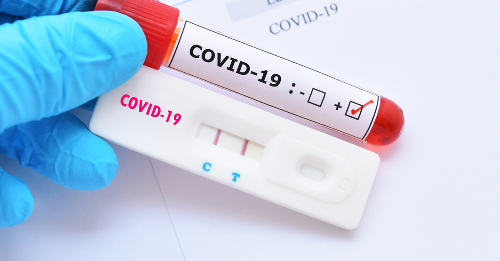
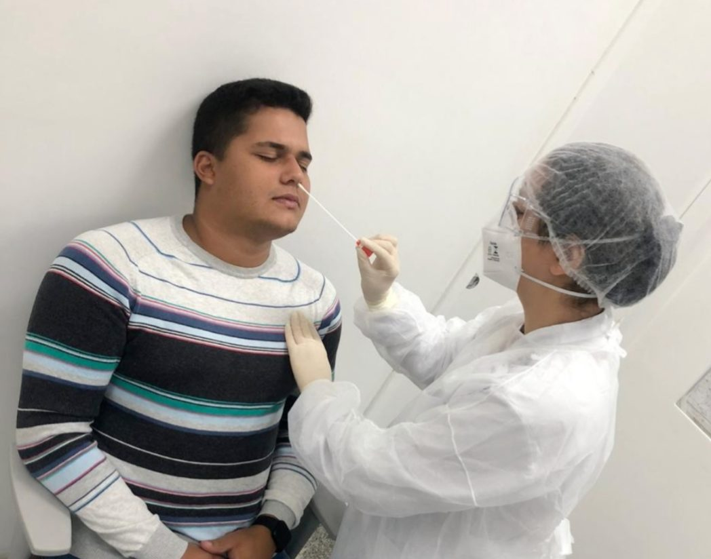

O que é COVID-19 ?
Os coronavírus são uma grande família de vírus comuns em muitas espécies diferentes de animais, incluindo camelos, gado, gatos e morcegos. Raramente, os
coronavírus que infectam animais podem infectar pessoas, como exemplo do MERS-CoV e SARS-CoV. Recentemente, em dezembro de 2019, houve a
transmissão de um novo coronavírus (SARS-CoV-2), o qual foi identificado em Wuhan na China e causou a COVID-19, sendo em seguida disseminada e
transmitida pessoa a pessoa.
A COVID-19 é uma doença causada pelo coronavírus, denominado SARS-CoV-2, que apresenta um espectro clínico variando de infecções assintomáticas a
quadros graves. De acordo com a Organização Mundial de Saúde, a maioria (cerca de 80%) dos pacientes com COVID-19 podem ser assintomáticos ou
oligossintomáticos (poucos sintomas), e aproximadamente 20% dos casos detectados requer atendimento hospitalar por apresentarem dificuldade respiratória,
dos quais aproximadamente 5% podem necessitar de suporte ventilatório.
Quais são os sintomas ?
-
Tosse
-
Febre
-
Coriza
-
Dor de garganta
-
Dificuldade para respirar
-
Perda de olfato (anosmia)
-
Alteração do paladar (ageusia)
-
Alteração do paladar (ageusia)
-
Cansaço (astenia)
-
Diminuição do apetite (hiporexia)
-
Dispnéia ( falta de ar)
Como é transmitido ?
-
Toque do aperto de mão contaminadas;
-
Gotículas de saliva;
-
Espirro
-
Tosse
-
Catarro
-
Objetos ou superfícies contaminadas, como celulares, mesas,
talheres, maçanetas, brinquedos, teclados de computador etc.
Diagnóstico
DIAGNÓSTICO CLÍNICO é realizado pelo médico atendente, que deve avaliar a possibilidade da doença, principalmente, em pacientes com a associação dos seguintes sinais e sintomas:
-
Febre, que pode estar presente no momento do exame clínico ou referida pelo paciente (sensação febril) de ocorrência recente.
-
Sintomas do trato respiratório (por exemplo, tosse, dispneia, coriza, dor de garganta)
-
Outros sintomas consistentes incluindo, mialgias, distúrbios gastrointestinais (diarreia/náuseas/vômitos), perda ou diminuição do olfato (anosmia) ou perda
ou diminuição do paladar (ageusia).
O DIAGNÓSTICO CLÍNICO-EPIDEMIOLÓGICO é realizado pelo médico atendente no qual considera-se:
-
casos de paciente com a associação dos sinais e sintomas supracitados ou SRAG MAIS histórico de contato próximo ou domiciliar, nos últimos 14 dias
antes do aparecimento dos sintomas, com caso confirmado laboratorialmente para COVID-19 e para o qual não foi possível realizar a investigação
laboratorial específica.
DIAGNÓSTICO LABORATORIAL - Caso o paciente apresente os sintomas respiratórios mais febre ou SRAG. O profissional de saúde poderá solicitar os
seguintes exames laboratoriais:
-
De biologia molecular, (RT-PCR em tempo real) que diagnostica tanto a COVID-19, a Influenza ou a presença de Vírus Sincicial Respiratório (VSR)
normalmente até o oitavo dia de início de sintomas.
-
Imunológico, que detecta, ou não, a presença de anticorpos em amostras coletadas a partir do oitavo dia de início dos sintomas. Sendo eles:
-
Ensaio imunoenzimático (Enzyme-Linked Immunosorbent Assay - ELISA);
-
Imunocromatografia (teste rápido) para detecção de anticorpos;
-
Imunoensaio por Eletroquimioluminescência (ECLIA).
-
Pesquisa de antígenos: resultado reagente para SARS-CoV-2 pelo método de Imunocromatografia para detecção de antígeno.


.png)
Projeto 1 de Desenvolvimento Web I que traz um site informtivo com descrição
e analise da pandemia do novo corona virus com dados reais do estado do Espirito Santo.
@Desenvolvido por Vinícius Ludiger Ramos

.svg)